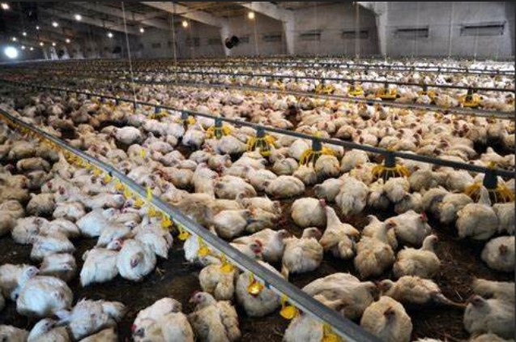
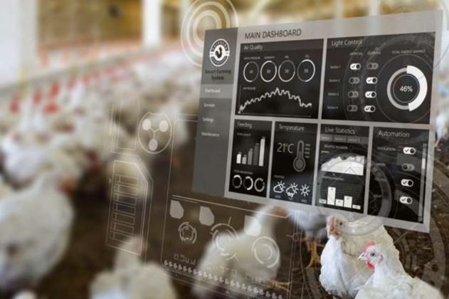
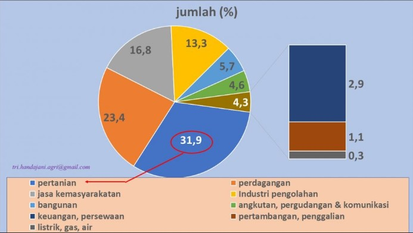

Permasalahan Efisiensi Pemberian Pakan
Pemberian pakan ayam secara manual sering kali tidak efisien karena keterlambatan, ketidaktepatan jumlah pakan,
serta bergantung pada tenaga kerja manusia. Hal ini dapat menyebabkan pemborosan pakan, menurunnya produktivitas ayam,
dan meningkatnya biaya operasional. Sistem otomatis berbasis cloud membantu mengatasi permasalahan ini dengan
memastikan pemberian pakan yang lebih konsisten, tepat waktu, dan efisien.

Kebutuhan Integrasi Teknologi dalam Peternakan
Di era digital, sektor pertanian dan peternakan memerlukan integrasi teknologi seperti Internet of Things (IoT) dan
cloud computing untuk meningkatkan produktivitas dan manajemen data. Microsoft Azure sebagai platform cloud menawarkan
solusi penyimpanan, analisis, dan pemantauan real-time yang mendukung pengelolaan peternakan secara modern dan efektif.

Meningkatnya Permintaan Industri Peternakan yang Berkelanjutan
Dengan meningkatnya kebutuhan pangan global, industri peternakan dituntut untuk meningkatkan produktivitas secara
berkelanjutan. Penerapan smart farming dengan sistem otomatisasi membantu mencapai tujuan tersebut dengan
meminimalkan pemborosan sumber daya, meningkatkan kesejahteraan hewan, dan memastikan produksi pakan
yang optimal melalui pemanfaatan teknologi berbasis cloud.